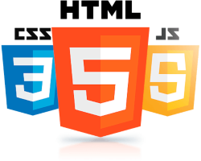

A videó kiváló segítséget nyújt a hatékony kommunikációban. Az Online
videó lehetőségre kattintva beillesztheti a hozzáadni kívánt videó
beágyazási kódját. Kulcsszavas keresést is végezhet annak érdekében,
hogy megtalálja a dokumentumához leginkább illő videót. Annak
érdekében, hogy dokumentuma még professzionálisabb hatást keltsen, a
Word egymáshoz illő élőfej-, élőláb-, fedőlap- és
szövegdobozdizájnokat kínál. Hozzáadhat például egy egymáshoz illő
fedőlapot, élőfejet és oldalsávot. Kattintson a Beillesztés parancsra,
és válassza ki a kívánt elemeket a különféle galériákból. A témák és
stílusok ugyancsak segíthetnek abban, hogy dokumentuma összeszedettebb
legyen. Amikor a Tervezés fülre kattint, és egy új témát választ, a
program a képeket, a diagramokat és a SmartArt-ábrákat is az új
témához igazítja. A stílusok alkalmazásakor a címsorokat az új témához
igazítja a program. Takarítson meg időt a Word új gombjaival, melyek
ott jelennek meg, ahol épp szükség van rájuk. Ha módosítani szeretné,
hogy hogyan illeszkedjenek a képek a dokumentumba, kattintson a képre,
és megjelennek mellette az elrendezési lehetőségek. Amikor táblázattal
dolgozik, kattintson oda, ahova sort vagy oszlopot szeretne beszúrni,
majd kattintson a pluszjelre. Az olvasás is egyszerűbb az új olvasási
elrendezésnek köszönhetően. Összecsukhatja a dokumentum egyes részeit,
hogy a kívánt szövegre összpontosíthasson. Ha félbe kell szakítania az
olvasást, a Word megjegyzi, hogy hol hagyta abba – még akkor is, ha
másik eszközön történik. A videó kiváló segítséget nyújt a hatékony
kommunikációban. Az Online videó lehetőségre kattintva beillesztheti a
hozzáadni kívánt videó beágyazási kódját. Kulcsszavas keresést is
végezhet annak érdekében, hogy megtalálja a dokumentumához leginkább
illő videót. Annak érdekében, hogy dokumentuma még professzionálisabb
hatást keltsen, a Word egymáshoz illő élőfej-, élőláb-, fedőlap- és
szövegdobozdizájnokat kínál. Hozzáadhat például egy egymáshoz illő
fedőlapot, élőfejet és oldalsávot. A videó kiváló segítséget nyújt a
hatékony kommunikációban. A témák és stílusok ugyancsak segíthetnek
abban, hogy dokumentuma összeszedettebb legyen. Amikor a Tervezés
fülre kattint, és egy új témát választ, a program a képeket, a
diagramokat és a SmartArt-ábrákat is az új témához igazítja. A
stílusok alkalmazásakor a címsorokat az új témához igazítja a program.
Takarítson meg időt a Word új gombjaival, melyek ott jelennek meg,
ahol épp szükség van rájuk.